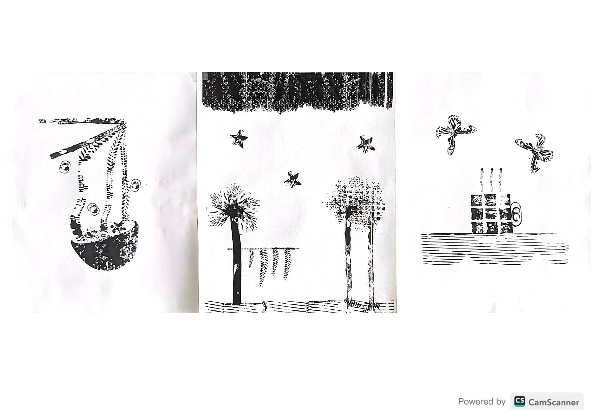

Grafías (2024)
Serie de ilustraciones experimentales creadas con tinta y objetos no convencionales como cadenas, latas de cerveza y plástico de burbujas. Esta técnica explora la textura y el azar en la composición, generando formas y patrones únicos. Mediante la impresión y el uso de diferentes herramientas, se logra una estética abstracta y expresiva, resaltando el contraste entre el negro de la tinta y el fondo blanco del papel.